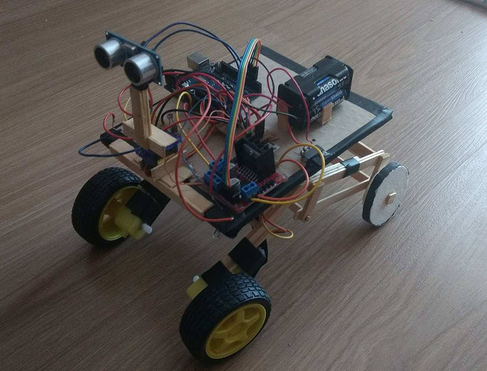
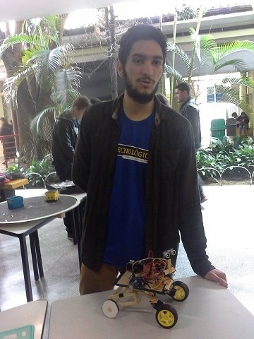

Analisando ambiente e... andando!
O Alexander Slavoj Gusev é um rover autônomo que faz detecção de objetos por ultrassom.
O funcionamento básico do rover consiste em fazer uma varredura do ambiente e andar na direção
com menos obstáculos. O rover é basicamente composto de: uma estrutura mecânica, 2 rodas passivas,
2 rodas motorizadas, fonte, Arduino, detector de objetos e controlador de motor, além de acessórios
como LEDs e fotoresistores.


Servos, sensores e... palitos de picolé!
Foi utilizado um par de rodas motorizadas, que contêm um motor DC e caixa de redução.
O analisador de ambiente é composto de um servo-motor de 180 graus modelo Tower Pro 9g e
um detector de ultrassom modelo HC-SR04. O detector de ultrassom foi acoplado ao servo através
de uma estrutura de madeira, e foi colocado um LED de alto brilho vermelho na direção do detector,
para indicar sua posição.
O Gusev foi apresentado na feira de cursos da Universidade Tecnológica Federal do Paraná, a #Tecnológica.